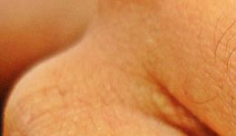
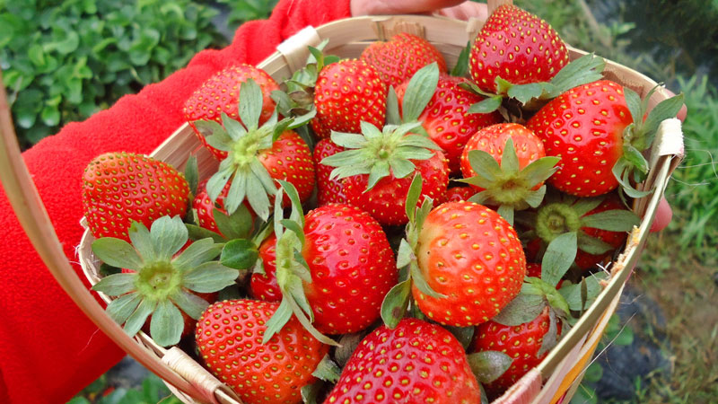

Smart Crop
Image crop or cropping refers to the removal of the outer parts of an image to improve framing, accentuate subject matter or change aspect ratio.
Basic Crop
Grafika accepts the following crop position:
- top-left
- top-center
- top-right
- center-left
- center
- center-right
- bottom-left
- bottom-center
- bottom-right
Examples
Given this input image and the code below:

// ...
$input = 'crop-test.jpg';
// Top
$editor->open( $image, $input );
$editor->crop( $image, 260, 150, 'top-left' );
$editor->save( $image, 'testCrop1.jpg' );
$editor->free( $image );
$editor->open( $image, $input );
$editor->crop( $image, 260, 150, 'top-center' );
$editor->save( $image, 'testCrop2.jpg' );
$editor->free( $image );
$editor->open( $image, $input );
$editor->crop( $image, 260, 150, 'top-right' );
$editor->save( $image, 'testCrop3.jpg' );
$editor->free( $image );
// Middle row
$editor->open( $image, $input );
$editor->crop( $image, 260, 150, 'center-left' );
$editor->save( $image, 'testCrop4.jpg' );
$editor->free( $image );
$editor->open( $image, $input );
$editor->crop( $image, 260, 150, 'center' );
$editor->save( $image, 'testCrop5.jpg' );
$editor->free( $image );
$editor->open( $image, $input );
$editor->crop( $image, 260, 150, 'center-right' );
$editor->save( $image, 'testCrop6.jpg' );
$editor->free( $image );
// Bottom row
$editor->open( $image, $input );
$editor->crop( $image, 260, 150, 'bottom-left' );
$editor->save( $image, 'testCrop7.jpg' );
$editor->free( $image );
$editor->open( $image, $input );
$editor->crop( $image, 260, 150, 'bottom-center' );
$editor->save( $image, 'testCrop8.jpg' );
$editor->free( $image );
$editor->open( $image, $input );
$editor->crop( $image, 260, 150, 'bottom-right' );
$editor->save( $image, 'testCrop9.jpg' );
$editor->free( $image );The above code would look like this if arranged in a 3x3 grid:
 |
 |
|
|  |  |
|
 |
 |
 |
Smart Crop
Grafika can also do smart cropping wherein it decides the crop position with the important regions of the images preserved.
$editor->open( $image, $input );
$editor->crop( $image, 200, 200, 'smart' );
$editor->save( $image, 'output.jpg' );| Type | Image | Result |
|---|---|---|
| Face |  |
 |
| Tower |  |
|
| Cube |  |
 |
| Strawberries |  |  |
| Anime |  |
Note: This feature is currently experimental and will be continuously improve in future releases.
See the crop API for more info.